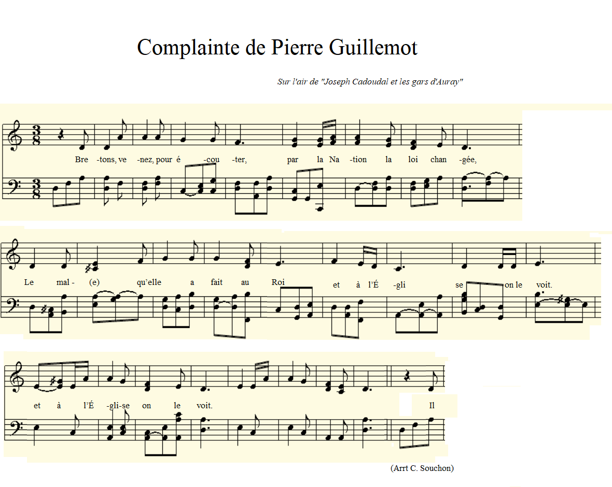

|
A propos de la mélodie Inconnue. Ici, "Joseph Cadoudal et les gars d'Auray" donnée par l'Abbé Cadic dans "Paroisse bretonne" , octobre 1919. Ce timbre est retenu en raison de la proximité géographique (Kerdel-en-Bignan / Auray) et chronologique (1794 / 1814) des événements considérés, tous deux issus de l'histoire de la chouannerie morbihannaise. Cependant "Joseph Cadoudal" est présenté sous forme de distiques d'octosyllabes alternant avec des onomatopées ("la falira dondaine / la falira digué don don"). (cf: Skolaerion Gwened, in fine , sous-page à cliquer "Chant Joseph Cadoudal...") A propos du texte Ce chant en français est tiré du manuscrit Lz507 conservé aux archives départementales du Morbihan. Il est mentionné pour la 1ère fois par l'historien J. Rouxel dans une série d'articles consacrés à l'"Episode de lutte religieuse (1791-1795): Constitutionnels et insermentés" dans la "Revue Morbihannaise" de mars 1909. Le chant n'est cité que partiellement. Il a été publié in extenso par un chercheur de Bignan, M. Antony Le Brazidec, en 2014, dans le N°1 de l'Echo de Kerdel de l'Association "Pierre Guillemot Roue Begnen". Le président de l'Association ayant sollicité des avis sur le timbre accompagnant ce texte, j'avais suggéré de limiter les recherches aux mélodies utilisées dans les milieux chouans dans ce secteur pour chanter ce genre de "gwerzioù" en langue bretonne. En effet, le français approximatif d'une part et la forme de distiques d'octosyllabes à rimes plates d'autre part qui caractérisent ce texte suggèrent que l'auteur appartenait à cet univers culturel. A la même époque, les chants révolutionnaires en français alterrnent systématiquement rimes masculines et féminines. A l'appui de cette assertion, j'avais suggéré également une traduction en breton KLT de la 1ère strophe. Il me fut demandé de proposer une traduction complète dans la langue de Le Gonidec. On la trouvera dans la colonne 1 ci-après. J'imaginais pouvoir m'en tirer en citant mot à mot des phrases tirées d'autres chants de chouans. En réalité chacune de ces 17 strophes est parfaitement originale et son auteur, vraisemblablement le chef chouan Pierre Guillemot, le "roi de Bignan", signe une oeuvre remarquable par son caractère unique. |
Mélodie Selon: "Complainte de Joseph Cadoudal" Arrangement par Christian Souchon  |
About the tune Unknown. Here, "Joseph Cadoudal and the Auray lads" published by Abbé Cadic in "Paroisse bretonne", October 1919. This ditty was chosen because of the geographical proximity (Kerdel-en-Bignan / Auray) and chronological (1794 / 1814) of the events considered, both pertaining to the history of the chouan fights in Morbihan. However the "Joseph Cadoudal" song has a slightly different structure: couplets of octosyllables alternating with onomatopoeia ("la falira dondaine / la falira digué don don"). (see: Skolaerion Gwened, in fine, clickable subpage "Chant Joseph Cadoudal...") About the lyrics This song in French is taken from the manuscript Lz507 preserved in the Morbihan departmental archives. It is mentioned for the first time by the historian J. Rouxel in a series of articles devoted to the "Episode de lutte religieuse (1791-1795): Constitutionnels et insermentés" in the "Revue Morbihannaise" of March 1909. Only part of the song is quoted. It was published in full by a researcher from Bignan, M. Antony Le Brazidec, in 2014, in No. 1 of l'"Echo de Kerdel" published by the "Pierre Guillemot - Roue Begnen" Association. The President of the Association having requested opinions on the tune accompanying these lyrics, I suggested that the research should be limited to melodies sung in Chouan circles in this area to this type of "gwerzioù" in the Breton language. Indeed, the approximate French on the one hand and the form of octosyllable couplets with flat rhymes on the other hand which characterize this text suggest that the author belonged to these cultural surroundings. Back then, revolutionary songs in French systematically alternated masculine and feminine rhymes. In support of this assertion, I also proposed a KLT Breton translation of the 1st stanza. I was asked to submit a complete translation into the "language of Le Gonidec". It will be found in column 1 below. I imagined I could get away with simply quoting word for word phrases from other chouan songs. In reality each of these 17 stanzas is perfectly original and their author, probably the Chouan chief Pierre Guillemot, the "king of Bignan" himself, signs an outstanding unique work . |
|
|
|
|
[1] L'auteur de cette complainte. J. Rouxel parlait d'une "complainte trouvée sur des prisonniers dans l'affaite de Mangolérian (mars 1794)" . Il omet de mentionner l'annotation marginale "trouvé chez Guillemot de Kerdel", qui indique que cette chanson avait été découverte lors d'une des visites domicilaires qui suivirent la bataille de Mangolérian chez celui qui avait été dénoncé comme chaef de l'insurrection. Un examen attentif de l'écriture prouve que ce manuscrit est de la main même de celui qu'on appellera le "roi de Bignan", Pierre Guillemot. [2] La bataille de Mangolérian C'est le premier exploit de la chouannerie morbihannaise à l'arrivée de deux officiers vendéens Joseph Defaÿ et Auguste de Béjarry aux hameaux de La Ferrière et Kerdel, en février 1794. Rescapés de la "Virée de Galerne" ils venaient soulever les campagnes pour prendre Vannes. Après l'assassinat de 2 patriotes dans la nuit du 12 au 13 mars, des affiches sont placardées et les appels de tambour invitent les hommes de Bignan, Plaudren, Plumelec et Saint-jean-Brévelay à se réunur sur la colline de Mangolérian le 15 mars. A l'arrivée des cavaliers républicains seuls 400 hommes sur 1200 poursuivent le combat sous les ordres de Pierre Guillemot avant de se disperser à leur tour. Les républicains commandés par le général Canuel fusillent quelques suspects à Plaudren, Grandchamp, Saint-Jean-Brévelay et Bignan, puis, le 19 mars cernent Bignan, arrêtent et entendent, entre autres, Jean Denis et Jean Cadoret, dont les interrogatoires sont joints à la liasse d'archives Lz507. Le 23 mars 1794, ordre était donné de se saisir de Pierre Guillemot. [3] Les paroles de la complainte. On peut imaginer que Pierre Guillemot s'est efforcé de restrancrire de mémoire ou sous la dictée cette complainte en vue de la diffuser dans la population. C'est un compendium rappelant aux paysans du terroir les griefs que la "Nation" accumulait contre elle depuis le début de la Révolution: régicide, pillages, spoliation de l'Eglise et persécution religieuse, ruine du commerce. Particulièrement original est le rapprochement avec le règne du souverain anglais Henri VIII dont un ministre est accusé d'avoir "détruit la loi" en Angleterre (dernière strophe). On peut penser que cette allusion vise Thomas Cromwell, principal conseiller d'Henri VIII de 1531 à 1540 et que celui-ci est confondu avec son homonyme et lointain parent, Olivier Cromwell, qui fit décapiter le roi Charles I. [4] Le décret d'émancipation de septembre 1791 A la veille de la Révolution, ll y avait en France quelque 40.000 Juifs dont la présence n'était légalement tolérée que dans les marches frontières. Le reste du Royaume était soumis au décret d'expulsion des Juifs de France, qui remonte au 14ème siècle. Avignon et le Comtat Venaissin, propriété des Papes, ne deviendront français qu'en 1791. La population juive s'y élève à 2000 personnes en 1789. Les multiples entités politiques qui constituent l'Alsace font obligation aux Juifs de payer des impôts spéciaux qui enrichissent les finances locales et incitent les princes à accueillir sur leurs territoires un plus grand nombre de Juifs. Cette population augmente rapidement au 18ème siècle (20.000 en 1734). En Lorraine les Juifs forment une population urbaine raffinée et de haut niveau culturel (Académie des Sciences et des Arts de Metz) qui parle Français, contrairement aux Juifs alsaciens. Les "Marranes" venus d'Espagne ou du Portugal à Bordeaux se marient à l'église et font baptiser leurs enfants, mais ils maintiennent fermement leur identité juive et attendant le moment où ils n'auront plus besoin de la dissimuler. C'est ce qui se produit une vingtaine d'années déjà avant la Révolution, grâce aux progrès de l'esprit de tolérance. Ils ont environ 5000 en 1789. Partout le carractère marginal des communautés juives dans la société française renforce leur cohésion interne. Elles ont des "syndics", ailleurs appelés "préposés généraux" ou encore "beylons", des caisses de charité. Les Juifs n'en demeurent pas moins tolérés dans les régions ci-dessus qu'en vertu de "Lettres Patentes" renouvelées de règne en règne et plus ou moins discriminatoires selon les provinces. L'influence des philosophes des lumières et l'exemple de l'Empereur Joseph II, combinée aux efforts de Juifs éminents (Pereire et Cerf Berr) conduit à une prise de conscience de l'ostracisme pesant sur cette population. En 1784, Louis XVI abolit le "péage corporel" imposé aux Juifs pour la traversée de certaines villes d'Alsace. Mirabeau, après un séjour en Allemagne, publie un livre qui a un grand retentissement sur "Moïse Mendelssohn et la réforme politique des Juifs", suivi d'un mémoire de l'abbé Grégoire, curé lorrain. Les travaux sur le sujet confiés par le roi en 1788 à son ministre Malesherbes sont interrompus par les événements de 1789. Les principes d'égalité des droits et de liberté religieuse proclamés le 26 août 1789, auraient dû entraîner immédiatement l'accès des Juifs à la pleine nationalité. En fait seuls les Juifs portugais participent aux opérations électorales de 1789, ceux des autres provinces étant seulement admis à présenter des requêtes devant la Constituante. La demande que Berr Isaac Berr de Nancy et l'Abbé Grégoire, présentent à l'Assemblée de faire accéder les Juifs au titre de citoyens actifs rencontre une opposition farouche des députés du Clergé et de la Noblesse. Les droits de citoyen actif sont accordés aux Juifs "connus sous le nom de Portugais, Espagnols et Avignonnais" en janvier 1790, mais non aux Juifs alsaciens, car on craint les représailles des villageois poussés par la misère et en quête de boucs émissaires. Ce sont finalement les partisans de l'égalité fondamentale des hommes qui l'emportent. A la veille de se séparer, l'Assemblée constituante finit par voter le 27 septembre 1791 l'abolition de toute discrimination concernant les Juifs. Les structures communautaires, les pouvoirs des syndics ou des préposés, les juridictions rabbiniques, les taxations pour les caisses de charité sont abolis du même coup. Cette victoire avait été acquise contre les adeptes de l'ancien ordre basé sur un exclusivisme chrétien qui s'exprime (c'est rarement le cas) dans une strophe du chant de Guillemot et qui faisait donc partie du crédo de la chouannerie. |
[1] The author of this lament. J. Rouxel mentions a complaint found in the pockets of prisoners in the Mangolérian fight (March 1794). He omits to mention the note in the margin "found at Guillemot's house at Kerdel", which means that this song was discovered during one of the home visits which followed the battle of Mangolérian at the man's who had been denounced as leader of the uprising. A careful examination of the handwriting proves that this manuscript is in the hand of the very man who was to be called the "King of Bignan", Pierre Guillemot. [2] The fight at Mangolerian hill It was the first feat of the Morbihan chouannerie after the arrival of two Vendée officers Joseph Defaÿ and Auguste de Béjarry in the Morbihan hamlets La Ferrière and Kerdel, in February 1794. These survivors of the campaign known as "Virée de Galerne" had come over to raise the Morbihan peasants against the authorities in Vannes. After the assassination of 2 patriots on the night of March 12 to 13, posters were put up and drum calls invited the men of Bignan, Plaudren, Plumelec and Saint-jean-Brévelay to gather on Mangolérian hill on the 15th. March. When the Republican horsemen arrived, only 400 men out of 1200 continued the fight under the orders of Pierre Guillemot before dispersing in their turn. The Republicans commanded by General Canuel shot some suspects at Plaudren, Grandchamp, Saint-Jean-Brévelay and Bignan, then, on March 19, they surrounded Bignan, arrested and questioned, among others, Jean Denis and Jean Cadoret, whose interrogations were attached to the Lz507 archive bundle. On March 23, 1794, orders were given to seize Pierre Guillemot. [3] The words of the lament. We can imagine that Pierre Guillemot endeavoured to transcribe this lament from memory or from dictation with a view to spreading it among the population. It is a compendium reminding the local peasants of the grievances that the "Nation" had accumulated against itself since the beginning of the Revolution: regicide, pillaging, dispossession of the Church and religious persecution, ruin of commerce. Particularly original is the comparison with the reign of the English sovereign Henry VIII, a minister of whom is accused of having "destroyed the law" in England (last stanza). We can think that this allusion is aimed at Thomas Cromwell, principal advisor to king Henry VIII from 1531 to 1540 and that he is confused with his namesake and distant relative, Oliver Cromwell, who had King Charles I beheaded. [4] The emancipation decree of September 1791 On the eve of the Revolution, there were some 40,000 Jews in France whose presence was legally tolerated only on border marches. The rest of the Kingdom was subject to the expulsion decree of Jews from France, which dates back to the 14th century. Avignon and Comtat Venaissin, property of the Popes, did not become French until 1791. The Jewish population there reached 2000 people in 1789. The multiple political entities that constitute Alsace required Jews to pay special taxes which enriched local finances and encouraged princes to welcome a larger number of Jews into their territories. This population increased rapidly in the 18th century (20,000 in 1734). In Lorraine the Jews form a refined urban population with a high cultural level (Academy of Sciences and Arts of Metz) who speak French, unlike the Alsatian Jews. The "Marranos" who come from Spain or Portugal to Bordeaux marry in church and have their children baptized, but they firmly maintain their Jewish identity and wait for the moment when they no longer need to hide it. This is what happened already twenty years before the Revolution, thanks to the progress of the spirit of tolerance. They numbered around 5,000 in 1789. Everywhere, the marginal character of Jewish communities in French society reinforces their internal cohesion. They have trustees, elsewhere called general agents or beylons, as well as charity funds. The Jews remain tolerated in the above regions under "Letters Patent" renewed from reign to reign and more or less discriminatory depending on the provinces. The influence of Enlightenment philosophers and the example of Emperor Joseph II, combined with the efforts of eminent Jews (Pereire and Cerf Berr) led to an awareness of the ostracism weighing on this population. In 1784, Louis XVI abolished the "corporal toll" imposed on Jews for crossing certain towns in Alsace. Mirabeau, after a stay in Germany, published a book which had a great impact, titled "Moses Mendelssohn and the political reform of the Jews", followed by a memoir by Abbé Grégoire, a parish priest from Lorraine. The work on the subject entrusted by the king in 1788 to his minister Malesherbes was interrupted by the events of 1789. The principles of equal rights and religious freedom proclaimed on August 26, 1789, should have immediately led to the Jews' access to full nationality. In fact, only Portuguese Jews participated in the electoral operations of 1789, those from other provinces only being allowed to present requests to the Constituent Assembly. The request that Berr Isaac Berr of Nancy and Abbot Grégoire presented to the Assembly to grant Jews access to the status of active citizens met with fierce opposition from the deputies of the Clergy and the Nobility. Active citizen rights were granted to Jews "known as Portuguese, Spanish and Avignonese" in January 1790, but not to Alsatian Jews, because there was fear of reprisals from villagers driven by poverty and looking for scapegoats. Ultimately, it is the supporters of the fundamental equality of men who won. On the eve of separating, the Constituent Assembly ended up voting on September 27, 1791 the abolition of all discrimination concerning the Jews. Community structures, the powers of trustees or agents, rabbinical jurisdictions, taxation for charity funds are abolished at the same time. This victory had been acquired against the followers of the old order based on a Christian exclusivism which is expressed (it seldom happens) in a verse of Guillemot's song and which was therefore part of the credo of the chouannerie. |